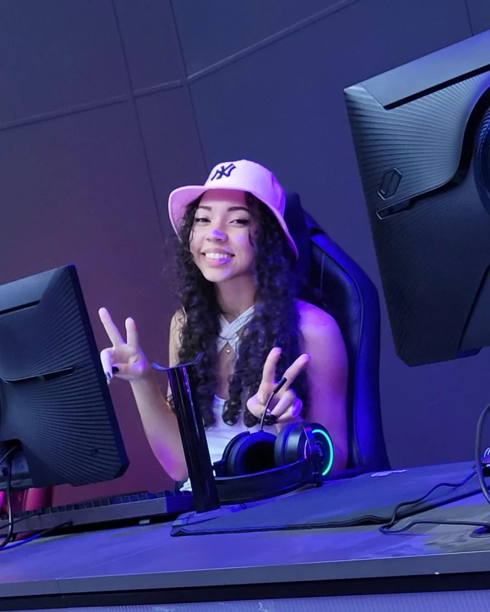

9 streamers mulheres para acompanhar e assistir em lives
Lista conta com figuras voltadas para competitivos como LoL, Valorant e
Fortnite, além de games que também estão em alta no meio de eSports,
como GTA RP
Ateninha_0

Ateninha_0, cujo nome verdadeiro é Jullia, é uma streamer brasileira conhecida na comunidade da Twitch. Em suas transmissões, ela frequentemente joga com amigos e interage com os espectadores, proporcionando um ambiente divertido e acolhedor. Seu canal é dedicado a jogos como VALORANT, onde compartilha partidas e experiências com seu público. Jullia, ou Atena, como é conhecida online, busca entreter seus seguidores com seu carisma e entusiasmo durante as lives.
Seu talento ficou ainda mais evidente ao vencer três campeonatos organizados pelo streamer Frttt, uma conquista que a colocou em destaque e lhe rendeu o respeito de jogadores e fãs de Valorant. Cada vitória foi um passo a mais para solidificar seu nome na cena, provando que dedicação e paixão pelo jogo fazem a diferença. Com um estilo de jogo agressivo e inteligente, Ateninha segue conquistando espaço e inspirando outras jogadoras. Quer ver de perto essa jogadora em ação? Acompanhe suas lives em twitch.tv/ateninha_0 e não perca suas próximas partidas!
Babi
/i.s3.glbimg.com/v1/AUTH_bc8228b6673f488aa253bbcb03c80ec5/internal_photos/bs/2021/J/e/SZdNbpR1q3GJssamXp4g/97536620-252665345938174-9099829404186634419-n.jpg)
Um dos maiores nomes do cenário de Free Fire, Bárbara "Babi" é streamer da LOUD junto com outros criadores de conteúdo - incluindo Bianca "Thaiga", finalista como Personalidade do Ano no Prêmio eSports Brasil 2020 e figura importante no cenário geral. Fenômeno no Free Fire, Babi também diverte o público com o seu carisma nas lives de GTA RP. Contratada para participar do time profissional da LOUD, a influenciadora migrou para a equipe de streamers da organização tempos depois. Babi se tornou a streamer brasileira com mais seguidores na Twitch, em outubro do ano passado, quando atingiu a marca de 450 mil seguidores. Atualmente, ela está com 993 mil.
Mayumi
/i.s3.glbimg.com/v1/AUTH_bc8228b6673f488aa253bbcb03c80ec5/internal_photos/bs/2021/V/H/o6sB2PSJuo5qB00JcNTw/mayumi-tsm-streamer-anuncio.jpg)
Uma das maiores figuras do cenário brasileiro de League of Legends, Júlia "Mayumi" anunciou a sua saída do competitivo em maio do ano passado. A brasileira focou na carreira de streamer e, no começo do ano, foi anunciada pela TSM, organização tradicional do esports, como streamer e criadora de conteúdo. Além do público brasileiro, Mayumi tem uma comunidade querida na plataforma chinesa DouYu e conta com mais de 1 milhão de seguidores no Weibo. A brasileira conquistou o público internacional com simpatia e carisma. Na Twitch, Mayumi conta com mais de 358 mil seguidores. Além de transmitir suas partidas de SoloQ, Mayumi também joga Minecraft e Among Us com os amigos.
Kalera
/i.s3.glbimg.com/v1/AUTH_bc8228b6673f488aa253bbcb03c80ec5/internal_photos/bs/2021/i/Y/u5bjKBRPG6HqX6h46cjA/155814783-2526614854299356-6525815690881628685-n.jpg)
Anunciada recentemente pela organização brasileira FURIA como streamer, Camila "Kalera" é uma figura bastante conhecida no cenário de eSports. Ex-jogadora de Rainbow Six Siege, Kalera está eternizada no FPS tático da Ubisoft. Por fazer parte do programa de criadores de conteúdo, a streamer ganhou um amuleto com o seu logo no jogo. Fora as transmissões de games, Kalera entretém os seus "emores" — maneira carinhosa como chama o público — de outras formas: ela faz lives de música cover, maquiagem e também sobre comida vegana.
Nayu
/i.s3.glbimg.com/v1/AUTH_bc8228b6673f488aa253bbcb03c80ec5/internal_photos/bs/2021/0/e/kfqphkREaM4RiT3sHg7Q/etz7c-exiaeh4hi.jpg)
Contratada para integrar o time de streamers da FURIA, Nayara "nayu" se destaca como streamer de GTA RP e Free Fire. Com tempo livre nas transmissões para conversar com o chat, nayu diverte o público com o seu jeito extrovertido e sincero. A streamer assiste a vídeos para reagir junto do chat e também joga Among Us com os inscritos. Em 2020, nayu foi apresentadora da Copa das Favelas de Free Fire e também participou do evento da CCXP Worlds.
Nyangiu
/i.s3.glbimg.com/v1/AUTH_bc8228b6673f488aa253bbcb03c80ec5/internal_photos/bs/2021/Z/K/xCWCGkQEGzngcxABQyUw/euit8yfxmaiwjxr.jpg)
Uma das principais figuras femininas dentro do cenário mobile, Giulia "Nyangiu" foca suas lives em jogos como Clash Royale e Brawl Stars. Admiradora de jogos desde criancinha junto com os seus irmãos, Nyangiu foi escalada como embaixadora do Batalha das Valquírias, torneio feminino de Clash Royale, e também já foi jogadora profissional. A streamer faz lives nas segundas, quartas e sextas-feiras, mas, além das transmissões, Nyangiu também traz diversas novidades sobre as competições mobile e as mudanças que acontecem nos torneios.
Francine
/i.s3.glbimg.com/v1/AUTH_bc8228b6673f488aa253bbcb03c80ec5/internal_photos/bs/2021/L/Q/WqI8nbSC6uNkIxsSB91g/133473626-452887592541728-9215946579295881863-n.jpg)
Francine "oifrancine" foca suas streams em Fortnite, mas também se arrisca no League of Legends. A streamer ainda protagoniza o FranQI Show, um programa no qual dois convidados se enfrentam em um jogo de perguntas e o perdedor tem que pagar algum tipo de prenda. Com quase 150 mil seguidores na Twitch, Francine já participou das Batalhas em Equipe: Corações Selvagens no Fortnite junto com outras equipes de criadores de conteúdo.
Maethe
/i.s3.glbimg.com/v1/AUTH_bc8228b6673f488aa253bbcb03c80ec5/internal_photos/bs/2021/3/0/xB0FNNSSaM1Pfc64NJ0Q/123248452-672514320073084-2783211535774279410-n.jpg)
Streamer de Overwatch, The Sims 4, Animal Crossing e outros, Maethe anima o público com a sua risada contagiante. Formada em veterinária, Maethe também compartilha com o chat sobre a vida com seus dois gatos, Ellie e Remy. Fã do Joe Jonas e admiradora da Disney, a streamer não esconde a felicidade ao contar as histórias que viveu em suas visitas ao parque. Com mais de 271 mil seguidores no seu canal da Twitch, Maethe revelou que realizou um dos seus sonhos ao dublar Jenny Jenny, personagem do jogo brasileiro Dandy Ace.
athenaxis
/i.s3.glbimg.com/v1/AUTH_bc8228b6673f488aa253bbcb03c80ec5/internal_photos/bs/2021/k/m/kgCUomTOy9smEHHSVx4w/evad0fcxmamr-vt.jpg)
Taiane "athenaxis" é streamer de Valorant e também GTA RP. Apesar disso, a streamer também já jogou LoL no passado e fez um cosplay da campeã Karma. A baiana ainda faz parte da Wakanda Streamers, ao lado de outras figuras como sazuneeee e suuhgetsu. A streamer bombou nas redes sociais após mostrar a sua semelhança com a agente Razer de Valorant, mas apesar disso, o operador favorito da baiana é o Brimnstone.
beamom
/i.s3.glbimg.com/v1/AUTH_bc8228b6673f488aa253bbcb03c80ec5/internal_photos/bs/2021/H/j/8ctBIBSD2eSgnBtChfrw/145476242-427016325235405-2131114585602673059-n.jpg)
Beatriz "beamom" é uma mulher trans que tem suas lives focadas em League of Legends, Valorant, Overwatch e jogos de survival horror. A streamer, que tem uma relação de amor e ódio com FPS, arranca gargalhadas do chat com os seus rages. Mono Lux, a criadora de conteúdo também gosta de jogar de Seraphine na rota inferior com o seu duo. A streamer ganhou mais notoriedade com as lives de GTA RP e, sempre que pode, imita a sua personagem do jogo, Dona Eva. Além das lives de jogos, beamom ainda gosta de assistir MasterChef e fazer maquiagem para os dias comemorativos, como Halloween e Carnaval.